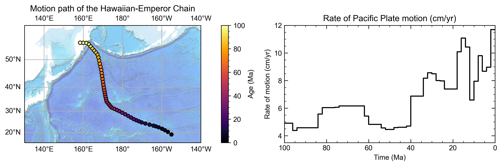

Common Use Cases
DataServer
The gplately.DataServer class allows users to automatically download and cache the plate reconstruction model files to a designated folder
on your system. These files include rotation models, topology features, and static geometries such as coastlines, continents, and
continent-ocean boundaries. Additionally, it supports the retrieval of other data types, including rasters, grids, and feature data.
See also
The gplately.DataServer class is implemented using the plate-model-manager Python package.
To simply access plate model files, you can use the plate-model-manager Python package directly.
1from gplately import DataServer
2
3data_server = DataServer("Muller2019")
4
5# Download plate reconstruction files and geometries from the Müller et al. 2019 model
6rotation_model, topology_features, static_polygons = (
7 data_server.get_plate_reconstruction_files()
8)
9coastlines, continents, COBs = data_server.get_topology_geometries()
10
11# Download the age grid at 100Ma from the Müller et al. 2019 model
12age_grid = data_server.get_age_grid(times=100)
13
14# Download the ETOPO1 geotiff raster
15etopo = data_server.get_raster("ETOPO1_tif")
See also
This page contains a list of all available plate reconstruction models.
PlateReconstruction
The gplately.PlateReconstruction class contains tools to reconstruct geological features like tectonic plates and plate boundaries,
and to interrogate plate kinematic data like plate motion velocities, and rates of subduction and seafloor spreading.
1from gplately import PlateReconstruction, PlateModelManager
2
3model = PlateModelManager().get_model("Muller2019")
4
5# Build a plate reconstruction model using a rotation model, a set of topology features and static polygons
6recon_model = PlateReconstruction(
7 model.get_rotation_model(),
8 topology_features=model.get_layer("Topologies"),
9 static_polygons=model.get_layer("StaticPolygons"),
10)
Alternatively, you may use the auxiliary functions to create a gplately.PlateReconstruction object.
1from gplately.auxiliary import get_plate_reconstruction
2
3# use the auxiliary function to create a PlateReconstruction object
4plate_reconstruction_instance = get_plate_reconstruction("Muller2019")
The PlateReconstructions example demonstrates in detail how to use the gplately.PlateReconstruction class.
The latest 02-PlateReconstructions.ipynb Jupyter Notebook is available in the GitHub GPlately repository.
Points
The methods in the gplately.Points class track the motion of a point (or group of points) represented by a latitude and longitude
through geologic time. This motion can be visualised using flowlines or motion paths and quantified with point motion velocities.
1import numpy as np
2
3from gplately import PlateModelManager, Points, auxiliary
4
5model = PlateModelManager().get_model("Muller2019")
6
7# Create a plate reconstruction model using a rotation model, a set of topology features and static polygons
8recon_model = auxiliary.get_plate_reconstruction(model)
9
10# Define some points using their latitude and longitude coordinates so we can track them through time!
11pt_lons = np.array([140.0, 150.0, 160.0])
12pt_lats = np.array([-30.0, -40.0, -50.0])
13
14# Create a Points object from these points
15gpts = Points(recon_model, pt_lons, pt_lats)
The WorkingWithPoints example demonstrates in detail how to use the Points class. The latest 03-WorkingWithPoints.ipynb Jupyter Notebook is available in the GitHub GPlately repository.
{kind=link}
The CreatingMotionPathsAndFlowlines example demonstrates how to create motion paths and flowlines. The latest 09-CreatingMotionPathsAndFlowlines.ipynb Jupyter Notebook is available in the GitHub GPlately repository.
{kind=link}
Raster
The gplately.Raster class contains methods to work with netCDF4 or MaskedArray gridded data. Grids may be filled,
resized, resampled, and reconstructed back and forwards through geologic time. Other array data can also be
interpolated onto Raster grids.
1from gplately import PlateModelManager, PresentDayRasterManager, Raster, auxiliary
2
3model_name = "Muller2019"
4# Create a plate reconstruction model using a rotation model, a set of topology features and static polygons
5recon_model = auxiliary.get_plate_reconstruction(model_name)
6
7# Any numpy array can be turned into a Raster object!
8raster = Raster(
9 plate_reconstruction=recon_model,
10 data=PresentDayRasterManager().get_raster("topography"),
11 extent="global", # equivalent to (-180, 180, -90, 90)
12 origin="lower", # or set extent to (-180, 180, -90, 90)
13)
14
15# Reconstruct the raster data to 50 million years ago!
16reconstructed_raster = raster.reconstruct(
17 time=50,
18 partitioning_features=PlateModelManager()
19 .get_model(model_name)
20 .get_layer("ContinentalPolygons"),
21)
The Rasters example demonstrates in detail how to use the gplately.Raster class.
The latest 06-Rasters.ipynb Jupyter Notebook is available in the GitHub GPlately repository.
{kind=link}
PlotTopologies
The gplately.PlotTopologies class works with the aforementioned gplately.PlateReconstruction class to plot
geologic features of different types, such as coastlines, continents and continent-ocean boundaries reconstructed through time using pyGPlates.
1from gplately import PlateModelManager, PlotTopologies, auxiliary
2
3model = PlateModelManager().get_model("Muller2019")
4recon_model = auxiliary.get_plate_reconstruction(model)
5
6gplot = PlotTopologies(
7 recon_model,
8 coastlines=model.get_layer("Coastlines"),
9 COBs=model.get_layer("COBs"),
10 continents=model.get_layer("ContinentalPolygons"),
11 time=55,
12)
You may use the auxiliary functions to create a gplately.PlotTopologies object.
1from gplately.auxiliary import get_gplot
2
3# use the auxiliary function to create a PlotTopologies object
4plot_topologies_obj = get_gplot("Muller2019", time=55)
The PlateReconstructions example demonstrates in detail how to use the gplately.PlotTopologies class.
The 02-PlateReconstructions.ipynb Jupyter Notebook is available in the GitHub GPlately repository.
{kind=link}
SeafloorGrid
The gplately.SeafloorGrid class wraps an automatic workflow to grid seafloor ages and seafloor spreading rates
as encoded by a plate reconstruction model.
1import os
2
3os.environ["DISABLE_GPLATELY_DEV_WARNING"] = "true"
4
5from gplately import SeafloorGrid, auxiliary
6
7if __name__ == "__main__":
8 gplot = auxiliary.get_gplot("Muller2019")
9
10 # Set up automatic gridding from 5Ma to present day
11 seafloorgrid = SeafloorGrid(
12 PlateReconstruction_object=gplot.plate_reconstruction, # The PlateReconstruction object
13 PlotTopologies_object=gplot, # The PlotTopologies object
14 max_time=5, # start time (Ma)
15 min_time=0, # end time (Ma)
16 ridge_time_step=1, # time increment (Myr)
17 )
18
19 # Begin automatic gridding!
20 seafloorgrid.reconstruct_by_topologies()
The SeafloorGrids example is a tutorial notebook that demonstrates
how to set up and use the gplately.SeafloorGrid object, and shows a sample set of output grids.
The latest 10-SeafloorGrids.ipynb Jupyter Notebook is available in the GitHub GPlately repository.
{kind=link}